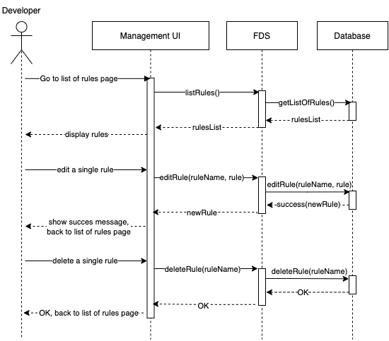

Managing Validation Rules
“As an employee, I want to manage my own
rule to validate users, so that I can use my
expertise to find suspicious customers as
efficiently as possible without the
communication overhead with other teams”
The system facilitate collaboration by
providing each team the possibility to create,
read, update and delete their own validation
rule.
